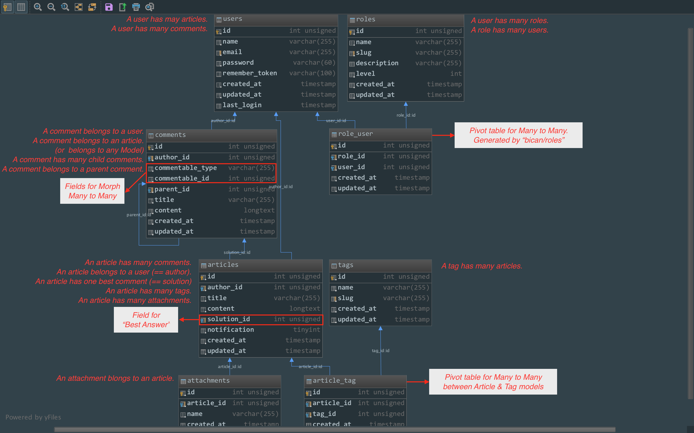
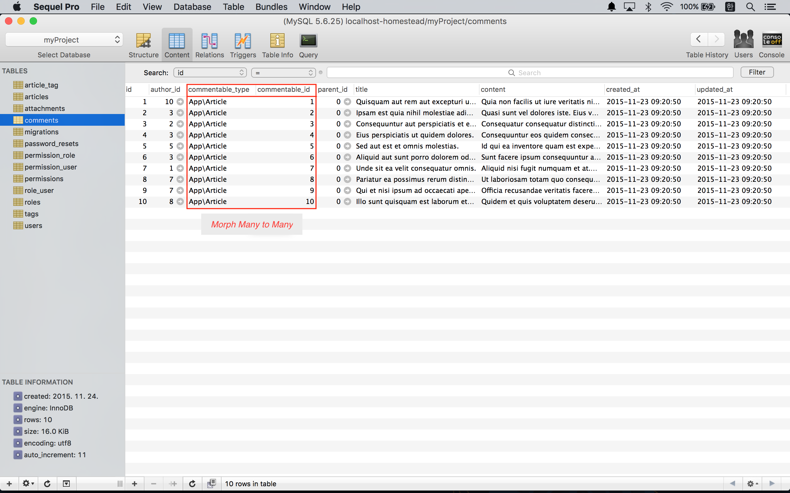

실전 프로젝트 2 - Forum
36강 - 마이그레이션과 모델
이번 강좌에서는 포럼에서 사용할 테이블들을 생성하기 위한 마이그레이션을 만들고, 각 테이블에 대응되는 엘로퀀트 모델을 만들것이다. 이번 강좌를 통해 One to Many, Many to Many, Polymorphic Many to Many 등 모델간 관계를 배울 것이다.
테이블 설계
31강 - 포럼 개발 기획을 참고해서 articles, comments, tags, attachments 총 4개의 메인 테이블과 article_tag 란 피봇 테이블로 설계해 보았다.

- Article 모델
- Article 인스턴스는 1명의 User가 작성한 것이다. (외래키 'author_id')
- 하나의 Article에 대해 여러 개의 Comment가 달릴 수 있다.
- 하나의 Comment를 Best Answer로 선택할 수 있다. (외래키 'solution_id')
- 하나의 Article에 여러 개의 Tag를 붙일 수 있다.
- 하나의 Article에 여러 개의 첨부파일을 붙일 수 있다.
- Article 인스턴스에 'notification' 필드값이 셋팅되어 있는 상태에서, Comment가 등록되면 'author_id'를 가진 User에게 이메일을 보낼 것이다.
- Comment 모델
- Comment 인스턴스는 특정 User가 작성한 것이다. (외래키 'commentable_id')
- Comment의 Comment, 즉 대댓글 기능을 위해, 하나의 Comment는 부모 Comment를 가질 수 있다. 즉, Comment 내부에서 재귀적인 관계가 형성된다.
- Comment는 Article 모델과 관계를 가질 수도 있지만, 다른 모델과 다형적인 관계를 가질 수도 있다. (Polymorphic Many to Many라 한다. 'commentable_type', 'commentable_id'로 필드명을 정했다.)
- Tag 모델
- 하나의 Tag 가 여러 개의 Article과 연결되어 있다.
- Attachment 모델
- Attachment 인스턴스는 하나의 Article에 소속된다.
가령, 우리 프로젝트에 Post, Application과 같은 모델이 더 있고, 모든 모델들은 모두 댓글 기능이 있다고 가정해 보자. 이 때, ArticleComment, PostComment, ApplicationComment로 총 3개의 모델을 만들고 각각 관계를 연결하는 것이 아니라, Polymorphic Many to Many 관계를 이용할 수 있다. Comment 모델 하나로, Article의 Comment로도, Post의 Comment로도 쓸 수 있는 것이다.
Article과 Tag는 Many to Many 관계를 가지고, 이를 위해 article_tag란 피봇테이블을 도입했다. Role과 User간의 Many to Many 관계 연결을 위한 role_user 피봇테이블은 34강 - 사용자 역할을 진행하는 과정에서 'bican/role' 패키지를 설치하는 과정에 생성된 것이다.
마이그레이션 작성
artisan CLI를 이용한다. --migration 옵션을 주면, 모델을 만들 때 마이그레이션도 같이 생성해 준다. article_tag 테이블을 만들 때는 --create=테이블이름 옵션을 이용했는데, 이 옵션을 주면 마이그레이션 작성시 타이핑을 좀 줄일 수 있다 (차이는 직접 경험해 보자).
$ php artisan make:model Comment --migration
$ php artisan make:model Article --migration
$ php artisan make:model Tag --migration
$ php artisan make:model Attachment --migration
$ php artisan make:migration create_article_tag_table --create="article_tag"마이그레이션을 만들 때 주의할 점이 있다. 마이그레이션 파일들은 파일명에 타임스탬프를 담고 있고, 생성 순서에 따라 순차적으로 실행된다. 우리 프로젝트에서는 create_articles_table 마이그레이션에서 comments 테이블과 'solution_id'를 이용해서 외래키 관계를 설정하고 있다. comments 테이블이 먼저 생성되어 있어야 articles 테이블에서 comment_id 외래키로 테이블간 연결할 수 있다. 즉, 마이그레이션은 순서가 중요하다.
혹, 순서가 잘못되어 마이그레이션 실행시 오류가 발생했다면... 이번 마이그레이션 실행으로 인해, 생성된 테이블이나, migrations 테이블에 추가된 엔트리가 있다면 삭제한다. 수동으로 파일명의 타임스탬프를 조작해 주어 실행 순서를 변경시킨 후, 마이그레이션을 다시 실행할 수 있다.
down() 메소드에 해당하는 리버스 마이그레이션은 아래에서 생략하였다.
// database/migrations/create_comments_table
class CreateCommentsTable extends Migration
{
public function up()
{
Schema::create('comments', function (Blueprint $table) {
$table->increments('id');
$table->integer('author_id')->unsigned()->index();
$table->string('commentable_type');
$table->integer('commentable_id')->unsigned();
$table->integer('parent_id')->unsigned();
$table->string('title');
$table->text('content');
$table->timestamps();
$table->foreign('author_id')->references('id')->on('users')->onDelete('cascade');
$table->foreign('parent_id')->references('id')->on('comments')->onDelete('cascade');
});
}
}// database/migrations/create_articles_table
class CreateArticlesTable extends Migration
{
public function up()
{
Schema::create('articles', function (Blueprint $table) {
$table->increments('id');
$table->integer('author_id')->unsigned()->index();
$table->string('title');
$table->text('content');
$table->integer('solution_id')->unsigned()->nullable();
$table->boolean('notification')->default(1);
$table->timestamps();
$table->foreign('author_id')->references('id')->on('users')->onDelete('cascade');
$table->foreign('solution_id')->references('id')->on('comments');
});
}
}// database/migrations/create_tags_table
class CreateTagsTable extends Migration
{
public function up()
{
Schema::create('tags', function (Blueprint $table) {
$table->increments('id');
$table->string('name');
$table->string('slug')->index();
$table->timestamps();
});
}
}// database/migrations/create_attachments_table
class CreateAttachmentsTable extends Migration
{
public function up()
{
Schema::create('attachments', function (Blueprint $table) {
$table->increments('id');
$table->string('name');
$table->integer('article_id')->unsigned()->index();
$table->timestamps();
});
}
}// database/migrations/create_article_tag_table
class CreateArticleTagTable extends Migration
{
public function up()
{
Schema::create('article_tag', function (Blueprint $table) {
$table->increments('id');
$table->integer('article_id')->unsigned();
$table->integer('tag_id')->unsigned();
$table->timestamps();
$table->foreign('article_id')->references('id')->on('articles')->onDelete('cascade');
$table->foreign('tag_id')->references('id')->on('tags')->onDelete('cascade');
});
}
}마이그레이션을 실행하자.
$ php artisan migrate모델 작성
테이블 설계에서 정리한 내용을 기반으로 모델간의 관계를 설정하고, $fillable, $hidden 필드를 설정하자.
// app/User.php
class User extends Model implements ...
{
...
/* Relationships */
public function articles()
{
return $this->hasMany(Article::class, 'author_id');
}
public function comments()
{
return $this->hasMany(Comment::class, 'author_id');
}
}// app/Comment.php
class Comment extends Model
{
protected $fillable = [
'commentable_type',
'commentable_id',
'author_id',
'parent_id',
'title',
'content'
];
protected $hidden = [
'author_id',
'commentable_type',
'commentable_id',
'parent_id'
];
/* Relationships */
public function author()
{
return $this->belongsTo(User::class, 'author_id');
}
public function commentable()
{
return $this->morphTo();
}
public function replies()
{
return $this->hasMany(Comment::class, 'parent_id');
}
public function parent()
{
return $this->belongsTo(Comment::class, 'id', 'parent_id');
}
}// app/Article.php
class Article extends Model
{
protected $fillable = [
'author_id',
'title',
'content',
'notification'
];
protected $hidden = [
'author_id',
'solution_id',
'notification'
];
/* Relationships */
public function author()
{
return $this->belongsTo(User::class, 'author_id');
}
public function tags()
{
return $this->belongsToMany(Tag::class);
}
public function comments()
{
return $this->morphMany(Comment::class, 'commentable');
}
public function solution()
{
return $this->hasOne(Comment::class, 'id', 'solution_id');
}
public function attachments()
{
return $this->hasMany(Attachment::class);
}
}// app/Tag.php
class Tag extends Model
{
protected $fillable = [
'name',
'slug'
];
/* Relationships */
public function articles()
{
return $this->belongsToMany(Article::class);
}
}// app/Attachment.php
class Attachment extends Model
{
protected $fillable = [
'name'
];
protected $hidden = [
'article_id'
];
/* Relationships */
public function article()
{
return $this->belongsTo(Article::class);
}
}모델 팩토리 작성
Tag 팩토리의 $faker->optional(0.9, 'Laravel')->word 문법은 fzaninotto/faker API, Attachment 팩토리의 $faker->randomElement(['png', 'jpg']) 문법은 fzaninotto/faker API를 참고하자.
$factory->define(App\User::class, function (Faker\Generator $faker) {
return [
'name' => $faker->name,
'email' => $faker->email,
'password' => bcrypt(str_random(10)),
'remember_token' => str_random(10),
];
});
$factory->define(App\Article::class, function (Faker\Generator $faker) {
return [
'title' => $faker->sentence(),
'content' => $faker->paragraph(),
];
});
$factory->define(App\Comment::class, function (Faker\Generator $faker) {
return [
'title' => $faker->sentence,
'content' => $faker->paragraph,
];
});
$factory->define(App\Tag::class, function (Faker\Generator $faker) {
$name = ucfirst($faker->optional(0.9, 'Laravel')->word);
return [
'name' => $name,
'slug' => str_slug($name),
];
});
$factory->define(App\Attachment::class, function (Faker\Generator $faker) {
return [
'name' => sprintf("%s.%s", str_random(), $faker->randomElement(['png', 'jpg'])),
];
});App\Attachment 모델은 사용자가 업로드한 파일의 이름(또는 경로)을 담고 있는 모델이란 것을 이해하고 넘어가자. 가령, 사용자가 'foo.png'를 업로드 했다면, 이 모델의 'name' Attribute는 'foo.png'가 되는 것이다.
참고 필자가 필드(field), Attribute, Property 란 용어를 혼용해서 사용하는데 모두 같은 의미로 이해하자. HTML 폼이나 DB 테이블에서는 필드라는 이름이 좀 더 적절하고, 오브젝트 컨텍스트에서는 Attribute나 Property란 용어가 더 적절할 것이다.
Seeder 작성
편의상 app/database/seeds/DatabaseSeeder.php 에 전부 몰아 넣었지만, 쪼개서 설명한다.
use Faker\Factory as Faker;
class DatabaseSeeder extends Seeder
{
public function run()
{
/*
* Prepare seeding
*/
$faker = Faker::create();
DB::statement('SET FOREIGN_KEY_CHECKS=0');
Model::unguard();
/*
* Seeding users table
*/
App\User::truncate();
factory(App\User::class)->create([
'name' => 'John Doe',
'email' => 'john@example.com',
'password' => bcrypt('password')
]);
factory(App\User::class, 9)->create();
$this->command->info('users table seeded');truncate() 메소드로 users 테이블을 비운다. 테스트를 위해 사용할 john@example.com 계정을 만들고, 나머지 Dummy 계정 9개를 만들었다.
/**
* Seeding roles table
*/
Bican\Roles\Models\Role::truncate();
DB::table('role_user')->truncate();
$adminRole = Bican\Roles\Models\Role::create([
'name' => 'Admin',
'slug' => 'admin'
]);
$memberRole = Bican\Roles\Models\Role::create([
'name' => 'Member',
'slug' => 'member'
]);
App\User::where('email', '!=', 'john@example.com')->get()->map(function($user) use($memberRole) {
$user->attachRole($memberRole);
});
App\User::whereEmail('john@example.com')->get()->map(function($user) use($adminRole){
$user->attachRole($adminRole);
});
$this->command->info('roles table seeded');'Admin' 과 'Member' 역할을 만들고, john@example.com 계정에는 'Admin' 역할을, 나머지 계정에는 'Member' 권한을 할당하였다. $user->attachRole(Bican\Roles\Models\Role|int $role) 메소드는 'bican/role' 에서 제공하는 Helper 메소드로, $user->roles()->attach(array $roleId) 또는 $user->roles()->sync(array $roleId)와 같은 역할을 한다.
/*
* Seeding articles table
*/
App\Article::truncate();
$users = App\User::all();
$users->each(function($user) use($faker) {
$user->articles()->save(
factory(App\Article::class)->make()
);
});
$this->command->info('articles table seeded');앞서 생성된 모든 App\User 컬렉션을 $users 변수에 담았다. each() 메소드로 루프를 돌면서, article() 관계를 이용해 App\Article 인스턴스를 만들었다
/**
* Seeding comments table
*/
App\Comment::truncate();
$articles = App\Article::all();
$articles->each(function($article) use($faker, $users) {
$article->comments()->save(
factory(App\Comment::class)->make([
'author_id' => $faker->randomElement($users->lists('id')->toArray())
])
);
});
$this->command->info('comments table seeded');Article 모델과 동일하게, 이번에는 앞서 생성된 App\Article 전체 컬렉션을 $articles 변수에 담고, 루프를 돌면서 미리 모델에서 정의한 관계를 이용해 App\Comment 인스턴스를 만든다. 여기서 factory()->make() 메소드에 인자로 넘긴 값은, 모델 팩토리에서 정의한 값을 오버라이드하거나 추가하는 값이다. 'author_id' 필드를 $faker->randomElement() 메소드를 이용하여 넣어 주었다.

/*
* Seeding tags table
*/
App\Tag::truncate();
DB::table('article_tag')->truncate();
$articles->each(function($article) use($faker) {
$article->tags()->save(
factory(App\Tag::class)->make()
);
});
$this->command->info('tags table seeded');'article_tag' 피봇테이블은 모델을 정의하지 않았기 때문에, DB Facade를 이용하여 truncate() 하였다.
/*
* Seeding attachments table
*/
App\Attachment::truncate();
if (! File::isDirectory(attachment_path())) {
File::deleteDirectory(attachment_path(), true);
}
$articles->each(function($article) use($faker) {
$article->attachments()->save(
factory(App\Attachment::class)->make()
);
});
$files = App\Attachment::lists('name');
if (! File::isDirectory(attachment_path())) {
File::makeDirectory(attachment_path(), 777, true);
}
foreach($files as $file) {
File::put(attachment_path($file), '');
}
$this->command->info('attachments table seeded');
/**
* Close seeding
*/
Model::reguard();
DB::statement('SET FOREIGN_KEY_CHECKS=1');
}
}App\Attachment Seeder에서는 DB 테이블에 저장되는 모델 뿐 아니라, 사용자가 업로드하여 서버의 파일 시스템에 저장되는 파일들도 같이 생성해 주어야 한다. 해서, truncate() 하는 과정에서 파일이 저장된 디렉토리를 청소해 주었고, Seeding 하면서 Dummy 파일도 같이 생성해 주었다.
Helper Function
Seeding 과정에서 사용한 attachment_path() Helper 을 app/helpers.php 에 만들어 주자.
if (! function_exists('attachment_path')) {
/**
* @param string $path
*
* @return string
*/
function attachment_path($path = '')
{
return public_path($path ? 'attachments'.DIRECTORY_SEPARATOR.$path : 'attachments');
}
}테스트
Seeding 을 실행하자. 마이그레이션부터 완전 다시 할 것이다.
$ php artisan migrate:refresh --seed
# Above command is equivalent to the following 3 commands...
# php artisan migrate:reset
# php artisan migrate
# php artisan db:seed오류 없이 실행되었다면, 마이그레이션, 모델과 관계설정, 모델 팩토리, Seeder 모두가 정상적으로 작성된 것이다. 더블 체크를 위해 artisan CLI 로 더 확인해 보아도 좋다.
$ php artisan tinker
>>> $user = App\User::find(1);
>>> $user->articles()->first();
>>> $user->comments()->first();
>>> $article = App\Article::find(1);
>>> $article->author()->first();
>>> $article->tags()->first();
>>> $article->comments()->first();
>>> $article->attachments()->first();
>>> $comment = App\Comment::find(1);
>>> $comment->author()->first();
>>> $comment->commentable()->first();
>>> $comment->replies()->first();
>>> $comment->parent()->first();
>>> $tag = App\Tag::find(1);
>>> $tag->articles()->first();
>>> $attachment = App\Attachment::find(1);
>>> $attachment->article()->first();